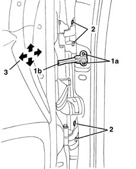
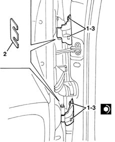

7005A14 front side door - adjust centering and moulding - includes adaptation of hinges and seals on door compartment
- Path
- Procedures > 70 FITTINGS > 7005 PASSENGER COMPARTMENT FRONT SIDE DOORS > 7005A front side door assembly > 7005A14 front side door - adjust centering and moulding - includes adaptation of hinges and seals on door compartment
- Kind
- repair procedure (removal / refitting; the operation number is the code)
- Applies to
- all engines; all production periods
- Interactive page
- https://sloeber94.github.io/elrnDB-lYpsln/en/#/2429478
Applies to: all engines; all production periods
1. Undo the bolt (1a) of the door check strap (1b) and close the door again to push the check strap back in.
2. Loosen the bolts.
3. Adjust the door position, making use of the bolt slots, so that it is perfectly alighed with the body.

Applies to: all engines; all production periods
Fit shims between hinge and door if necessary to ensure the door is adjusted properly, proceeding as follows (the hinge position is adjusted using the door as reference).
Remove the door striker, see op. 7005B14
Working as described above, slacken the hinge bolts slightly.
1. Undo the retaining bolts.
2. Fit the shims.
Screw in the bolts without tightening.
Adjust the door position, making use of the movements of the bolt attachment plate, so that it is perfectly aligned with the body.
Refit the door striker, see op. 7005B14
3. After adjustment, tighten the hinge retaining bolts.
 | Fastening | Component | Ø | Value (daNm) |
|---|---|---|---|---|
4 | Bolt | FRONT SIDE DOOR HINGES | M10 x 1.25 | 4.9 |

Applies to: all engines; all production periods
Touch up the paintwork in the hinge area.
Refit the door, securing it with the hinge pin bolts.
| Fastening | Component | Ø | Value (daNm) |
|---|---|---|---|---|
- | Bolt | FRONT SIDE DOOR HINGES | M6 | 1.5 |
Make the door check strap come out and tighten its bolt.
Check that the striker and catch fit together properly (see op. 7005B14).